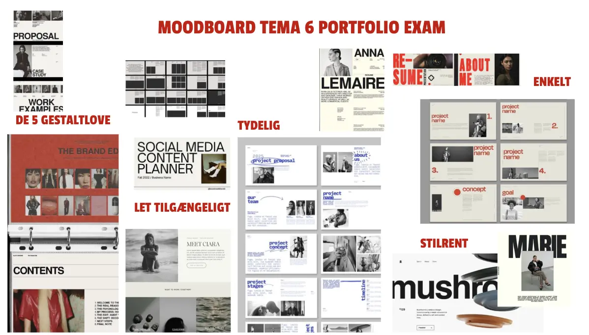
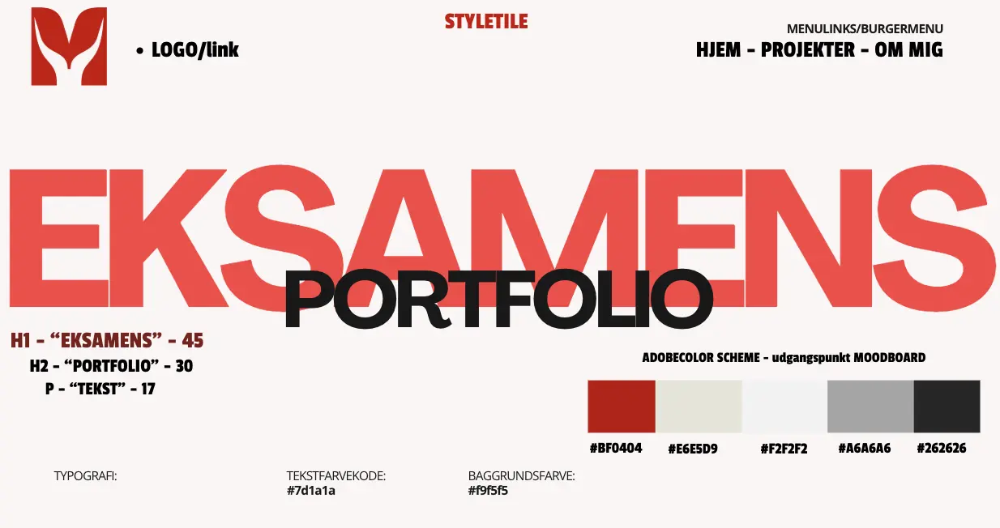

Tema 6 – Portfolio
I Tema 6 har jeg arbejdet med at samle og præsentere mit arbejde fra 1. semester i en digital portfolio. Formålet med portfolioen har været at skabe et overskueligt, visuelt og personligt website, der viser både færdige projekter og min proces som multimediedesignstuderende.
Moodboard

Moodboardet blev brugt som et visuelt fundament for portfolioens udtryk. Jeg har valgt en enkel og rolig stil med fokus på hvidrum, afdæmpede farver og et moderne layout.
Styletile

Styletilen viser de designvalg, jeg har truffet i forhold til farver, typografi og visuelle elementer på websitet. Styletilen har fungeret som en rettesnor gennem hele udviklingsprocessen.
Proces og udvikling
I udviklingen af portfolioen har jeg arbejdet iterativt, hvor jeg løbende har justeret design og struktur. Jeg har blandt andet arbejdet med HTML og CSS, herunder brug af CSS Grid, media queries og hover-effekter for at forbedre brugeroplevelsen. Undervejs har jeg testet layoutet på forskellige skærmstørrelser for at sikre, at websitet er responsivt og fungerer optimalt på både desktop og mobil.
Dokumentation
Under 1. semester har jeg løbende taget noter og dokumenteret min læring i et samlet dokument.
Se mine noter fra 1. semesterRefleksion
Arbejdet med Tema 6 har givet mig en større forståelse for, hvordan design, struktur og kode hænger sammen i et samlet produkt. Jeg har lært vigtigheden af planlægning, visuel konsistens og løbende test, og jeg oplever, at portfolioen repræsenterer både mine faglige og personlige kompetencer som multimediedesignstuderende.